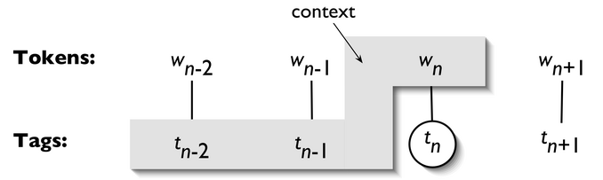

Text Enrichment#
The objective of text enrichment is to utilize computational techniques of automatic annotations and extract additional linguistic information from the text.
Parts-of-Speech (POS) Tagging#
Every POS tagger needs to first operationlize a tagset, i.e., a complete list of possible tags for the entire corpus.
A common tagset for English is Penn-treebank tagset.
NLTK#
NLTK default POS tagger
import nltk
text = "This is a sentence."
text_word = nltk.word_tokenize(text)
text_pos = nltk.pos_tag(text_word)
print(text_pos)
[('This', 'DT'), ('is', 'VBZ'), ('a', 'DT'), ('sentence', 'NN'), ('.', '.')]
Using NLTK to Train Taggers
from nltk.corpus import treebank
print(len(treebank.tagged_sents())) # total number of sents
# train-test for training and testing taggers
test_sents = treebank.tagged_sents()[3000:]
train_sents = treebank.tagged_sents()[:3000]
3914
test_sents[1]
[('In', 'IN'),
('early', 'RB'),
('trading', 'NN'),
('in', 'IN'),
('Tokyo', 'NNP'),
('Thursday', 'NNP'),
(',', ','),
('the', 'DT'),
('Nikkei', 'NNP'),
('index', 'NN'),
('fell', 'VBD'),
('63.79', 'CD'),
('points', 'NNS'),
('to', 'TO'),
('35500.64', 'CD'),
('.', '.')]
NgramTagger
 (From NLTK Book Ch 5. Figure 5-1)
from nltk.tag import UnigramTagger, BigramTagger, TrigramTagger
unigram_tagger = UnigramTagger(train_sents)
bigram_tagger = BigramTagger(train_sents)
trigram_tagger = TrigramTagger(train_sents)
unigram_tagger.evaluate(test_sents)
/var/folders/n7/ltpzwx813c599nfxfb94s_640000gn/T/ipykernel_22965/3641959337.py:1: DeprecationWarning:
Function evaluate() has been deprecated. Use accuracy(gold)
instead.
unigram_tagger.evaluate(test_sents)
0.8571551910209367
bigram_tagger.evaluate(test_sents)
/var/folders/n7/ltpzwx813c599nfxfb94s_640000gn/T/ipykernel_22965/705572540.py:1: DeprecationWarning:
Function evaluate() has been deprecated. Use accuracy(gold)
instead.
bigram_tagger.evaluate(test_sents)
0.11318799913662854
trigram_tagger.evaluate(test_sents)
/var/folders/n7/ltpzwx813c599nfxfb94s_640000gn/T/ipykernel_22965/2977493380.py:1: DeprecationWarning:
Function evaluate() has been deprecated. Use accuracy(gold)
instead.
trigram_tagger.evaluate(test_sents)
0.06902654867256637
NLTK Taggers (
nltk.tag):DefaultTaggerUnigramTagger,BigramTagger,TrigramTaggerRegexpTaggerAffixTaggerClassifierBasedPOSTagger
Backoff Tagging
The idea of backoff is that for longer sequences, we are more likely to encounter unseen n-grams in the test data.
To avoid the zero probability issue due to the unseen n-grams, we can backoff the probability estimates using the lower-order (n-1)-grams.
unigram_tagger = UnigramTagger(train_sents)
bigram_tagger = BigramTagger(train_sents,backoff=unigram_tagger)
trigram_tagger = TrigramTagger(train_sents, backoff=bigram_tagger)
trigram_tagger.evaluate(test_sents)
/var/folders/n7/ltpzwx813c599nfxfb94s_640000gn/T/ipykernel_22965/2977493380.py:1: DeprecationWarning:
Function evaluate() has been deprecated. Use accuracy(gold)
instead.
trigram_tagger.evaluate(test_sents)
0.8647096913447011
Tip
Sometimes it may take a while to train a tagger. We can pickle a trained tagger for later usage.
import pickle
f = open('trigram-backoff-tagger.pickle', 'wb')
f.close()
f = open('trigram-backoff-tagger.pickle', 'rb')
tagger = pickle.load(f)
Classifier-based Tagger
from nltk.tag.sequential import ClassifierBasedPOSTagger
cbtagger = ClassifierBasedPOSTagger(train=train_sents)
cbtagger.evaluate(test_sents)
/var/folders/n7/ltpzwx813c599nfxfb94s_640000gn/T/ipykernel_22965/2907403403.py:3: DeprecationWarning:
Function evaluate() has been deprecated. Use accuracy(gold)
instead.
cbtagger.evaluate(test_sents)
0.9309734513274336
Note
By default, the ClassifierBasedPOSTagger uses a NaiveBayesClassifier for training.
To try other classifers, e.g., Maximum Entropy Classifier:
import numpy
# warning is not logged here. Perfect for clean unit test output
with numpy.errstate(divide='ignore'):
numpy.float64(1.0) / 0.0
%%time
from nltk.classify import MaxentClassifier
metagger = ClassifierBasedPOSTagger(train=train_sents,
classifier_builder=MaxentClassifier.train)
metagger.evaluate(test_sents)
==> Training (100 iterations)
Iteration Log Likelihood Accuracy
---------------------------------------
1 -3.82864 0.008
2 -0.76859 0.957
/Users/Alvin/.local/lib/python3.9/site-packages/nltk/classify/maxent.py:1381: RuntimeWarning: overflow encountered in power
exp_nf_delta = 2**nf_delta
/Users/Alvin/.local/lib/python3.9/site-packages/nltk/classify/maxent.py:1383: RuntimeWarning: invalid value encountered in multiply
sum1 = numpy.sum(exp_nf_delta * A, axis=0)
/Users/Alvin/.local/lib/python3.9/site-packages/nltk/classify/maxent.py:1384: RuntimeWarning: invalid value encountered in multiply
sum2 = numpy.sum(nf_exp_nf_delta * A, axis=0)
Final nan 0.984
<timed exec>:4: DeprecationWarning:
Function evaluate() has been deprecated. Use accuracy(gold)
instead.
CPU times: user 7min 4s, sys: 3.59 s, total: 7min 8s
Wall time: 7min 29s
0.9258363911072739
Classifier-based with Cut-off Probability
from nltk.tag import DefaultTagger
default = DefaultTagger('NN')
cbtagger2 = ClassifierBasedPOSTagger(train=train_sents,
backoff=default,
cutoff_prob=0.3)
cbtagger2.evaluate(test_sents)
/var/folders/n7/ltpzwx813c599nfxfb94s_640000gn/T/ipykernel_22965/2134614117.py:8: DeprecationWarning:
Function evaluate() has been deprecated. Use accuracy(gold)
instead.
cbtagger2.evaluate(test_sents)
0.9311029570472696
spacy#
Another useful module for English POS tagging is to use
spacy. We will come back to this module when we talk about parsing.
Chunking#
Chunk extraction is the processing of extracting short phrases from a part-of-speech tagged sentence.
This is different from parsing in that we are only interested in standalone chunks or phrases, instead of the full parsed syntactic tree.
In NLTK, A
ChunkRuleclass specifies what to include in a chunk, while aChinkRuleclass specifies what to exclude from a chunk.Chunking creates chunks and chinking breaks up those chunks.
Both rules utilize regular expressions.
For example, we can extract NP chunks.
import matplotlib.pyplot as plt
plt.rcParams['figure.dpi'] = 150 # default for me was 75
plt.rcParams['figure.figsize'] = (20,20)
%matplotlib inline
from nltk.chunk import RegexpParser
np_chunker = RegexpParser(r'''
NP:
{<DT><NN.*><.*>*<NN.*>} # chunk
}<VB.*>{ # chink
''')
s = "This course has many interesting topics"
np_chunker.parse(nltk.pos_tag(nltk.word_tokenize(s)))
---------------------------------------------------------------------------
ModuleNotFoundError Traceback (most recent call last)
File ~/.local/lib/python3.9/site-packages/IPython/core/formatters.py:344, in BaseFormatter.__call__(self, obj)
342 method = get_real_method(obj, self.print_method)
343 if method is not None:
--> 344 return method()
345 return None
346 else:
File ~/.local/lib/python3.9/site-packages/nltk/tree/tree.py:782, in Tree._repr_svg_(self)
781 def _repr_svg_(self):
--> 782 from svgling import draw_tree
784 return draw_tree(self)._repr_svg_()
ModuleNotFoundError: No module named 'svgling'
Tree('S', [Tree('NP', [('This', 'DT'), ('course', 'NN')]), ('has', 'VBZ'), Tree('NP', [('many', 'JJ'), ('interesting', 'JJ'), ('topics', 'NNS')])])
We can define a function to extract chunks from the tree.
def sub_leaves(tree, label):
return [t.leaves() for t in
tree.subtrees(lambda s:s.label()==label)]
s_chunk_tree = np_chunker.parse(
nltk.pos_tag(
nltk.word_tokenize(s)))
sub_leaves(s_chunk_tree, "NP")
[[('This', 'DT'), ('course', 'NN')],
[('many', 'JJ'), ('interesting', 'JJ'), ('topics', 'NNS')]]
Named Entity Chunker (NLTK)
from nltk.chunk import ne_chunk
ne_chunks=ne_chunk(treebank.tagged_sents()[0])
ne_chunks
---------------------------------------------------------------------------
ModuleNotFoundError Traceback (most recent call last)
File ~/opt/anaconda3/envs/python-notes-2023/lib/python3.9/site-packages/IPython/core/formatters.py:344, in BaseFormatter.__call__(self, obj)
342 method = get_real_method(obj, self.print_method)
343 if method is not None:
--> 344 return method()
345 return None
346 else:
File ~/opt/anaconda3/envs/python-notes-2023/lib/python3.9/site-packages/nltk/tree/tree.py:782, in Tree._repr_svg_(self)
781 def _repr_svg_(self):
--> 782 from svgling import draw_tree
784 return draw_tree(self)._repr_svg_()
ModuleNotFoundError: No module named 'svgling'
Tree('S', [Tree('PERSON', [('Pierre', 'NNP')]), Tree('ORGANIZATION', [('Vinken', 'NNP')]), (',', ','), ('61', 'CD'), ('years', 'NNS'), ('old', 'JJ'), (',', ','), ('will', 'MD'), ('join', 'VB'), ('the', 'DT'), ('board', 'NN'), ('as', 'IN'), ('a', 'DT'), ('nonexecutive', 'JJ'), ('director', 'NN'), ('Nov.', 'NNP'), ('29', 'CD'), ('.', '.')])
sub_leaves(ne_chunks, "PERSON")
[[('Pierre', 'NNP')]]
sub_leaves(ne_chunks, "ORGANIZATION")
[[('Vinken', 'NNP')]]
Parsing#
For Parsing, we will use spacy, a powerful package for natural language processing.
import spacy
from spacy import displacy
# load language model
nlp_en = spacy.load('en_core_web_sm')
# parse text
doc = nlp_en('This is a sentence')
2023-07-14 11:12:14.014017: I tensorflow/core/platform/cpu_feature_guard.cc:193] This TensorFlow binary is optimized with oneAPI Deep Neural Network Library (oneDNN) to use the following CPU instructions in performance-critical operations: AVX2 FMA
To enable them in other operations, rebuild TensorFlow with the appropriate compiler flags.
for token in doc:
print((token.text,
token.lemma_,
token.pos_,
token.tag_,
token.dep_,
token.shape_,
token.is_alpha,
token.is_stop,
))
('This', 'this', 'PRON', 'DT', 'nsubj', 'Xxxx', True, True)
('is', 'be', 'AUX', 'VBZ', 'ROOT', 'xx', True, True)
('a', 'a', 'DET', 'DT', 'det', 'x', True, True)
('sentence', 'sentence', 'NOUN', 'NN', 'attr', 'xxxx', True, False)
## Check meaning of a POS tag
spacy.explain('VBZ')
'verb, 3rd person singular present'
# Visualize
displacy.render(doc, style="dep")
options = {"compact": True, "bg": "#09a3d5",
"color": "white", "font": "Source Sans Pro"}
displacy.render(doc, style="dep", options=options)
To get the dependency relations, we first need to extract NP chunks, on which dependency relations are annotated.
Please refer to spacy documentation for more detail on dependency parsing.
doc2 = nlp_en(' '.join(treebank.sents()[0]))
for c in doc2.noun_chunks:
print((c.text,
c.root.text,
c.root.dep_,
c.root.head.text))
('Pierre Vinken', 'Vinken', 'nsubj', 'join')
('the board', 'board', 'dobj', 'join')
('a nonexecutive director', 'director', 'pobj', 'as')
Each NP chunk includes several important pieces of information:
Text: The original noun chunk text.
Root text: The original text of the word connecting the noun chunk to the rest of the parse.
Root dep: Dependency relation connecting the root to its head.
Root head text: The text of the root token’s head.
displacy.render(doc2, style="dep")
Named Entity Extraction
for ent in doc2.ents:
print((ent.text,
ent.start_char,
ent.end_char,
ent.label_))
('Pierre Vinken', 0, 13, 'PERSON')
('61 years old', 16, 28, 'DATE')
('Nov. 29', 78, 85, 'DATE')
Please check the documentation of Universal Dependency Types proposed by Marneffe et al.